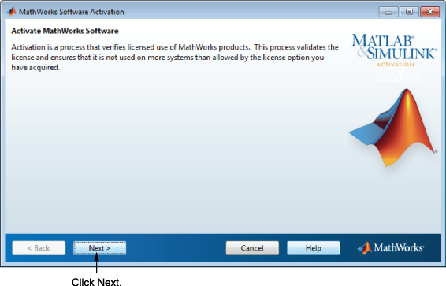

Activating an Installation
Activation is a process that verifies licensed use of MathWorks® products. This process validates the license and ensures that it is not used on more computers or by more users than allowed by the license option you have acquired.
If you let the installer start the activation application, and you were logged in to your MathWorks Account during installation, your login session continues into the activation process. Click Next to proceed with activation.

If you were not logged in to your MathWorks Account during installation, or you started the activation application independently, you must choose whether to activate automatically or manually. If you are connected to the Internet, leave the Activate automatically using the Internet (recommended) option selected. Activating immediately after installation is the quickest way to start using MATLAB®.
If you are not connected to the Internet, select Activate manually without the Internet. If you select this option, you need a License File to activate manually. Your License File identifies the products you can run. Contact the Administrator of the license to get the file if you do not already have it.